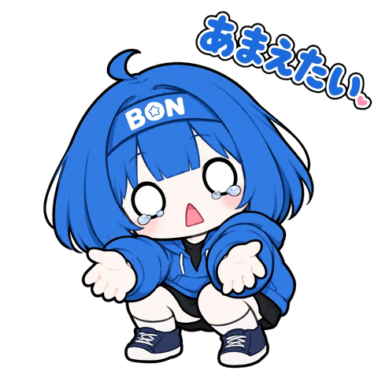

ボンの世界
- ボンたちが暮らす世界の名前は「ボン界」。人間の世界とは別の世界である。
- 国や街は、現実の地球をモデルにした架空のもの。自然や文明も、地球によく似ている。
- 時間の流れは人間の世界と同じ。住人はみんな二頭身。
- 人間が「ボン」になったような世界で、学校・会社・病院・お店・役所・電車・インターネットなどがある。
- 現実と似ているけれど、ボンならではの文化や決まりもある。
BON WORLD
うむ、よく来たな！ ここでは、我輩たちが暮らす「ボン界」のことを教えてやろう。
ボンは、赤ちゃんとして生まれるわけではないのだ。ここが少し不思議なところであるぞ。
ボンの赤ちゃんについて、我輩が教えるのだ。ふふ、かわいいのだ。

ひょえボンの 赤ちゃん時代の おはなし(小説)は、こちら。
ひょえボンの はじめての おうちを読むボンは、見た目はずっと変わらないが、ちゃんと成長するのだ。うむ。
我輩たちの街があるのは、「梵本(ぼんほん)」という国なのだ。日本によく似た、ゆったりとした国であるぞ。
それでは、我輩の仲間たちを、ひとこと紹介しておこう。くわしくは、ずかんを見るがよいぞ！
梵本の歴史は、日本の歴史とだいたい同じなのだ。ボンたちも、それぞれの時代を生きてきたのだ。(名前は、すべて架空のものであるぞ)